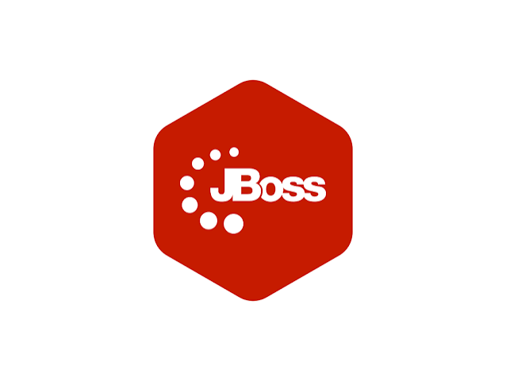

Servidores de aplicaciones
Qué es un servidor de aplicaciones y en qué se diferencia de un servidor web, ejemplos reales (Tomcat, WildFly, Jetty…) y un caso práctico completo: instalar Apache Tomcat en la VM Ubuntu de Azure y desplegar en él una API Spring Boot de ejemplo (Pokémon) con base de datos embebida H2, empaquetada como .war.
1¿Qué es un servidor de aplicaciones?
En el Tema 1 vimos que un servidor web (Apache, Nginx) sabe atender peticiones HTTP y servir contenido: archivos que ya existen en disco, o páginas generadas delegando en algún intérprete externo. Un servidor de aplicaciones va un paso más allá: es el programa que ejecuta el código de la aplicación —normalmente escrito en Java— y le proporciona todo lo que necesita para funcionar: un contenedor donde vivir, gestión del ciclo de vida de sus componentes, sesiones de usuario, pool de conexiones a base de datos, seguridad, y en los más completos, transacciones y mensajería.
En muchas arquitecturas ambos conviven: un servidor web hace de proxy inverso delante del servidor de aplicaciones —sirve directamente los archivos estáticos y reenvía las peticiones dinámicas al servidor de aplicaciones—, mientras que el servidor de aplicaciones se dedica solo a ejecutar la lógica. En este tema instalaremos Tomcat en la misma VM del Tema 1, donde ya hay un Apache2 funcionando, precisamente para ver cómo pueden coexistir un servidor web y uno de aplicaciones en la misma máquina, cada uno en su puerto.
| Servidor web | Servidor de aplicaciones | |
|---|---|---|
| Qué sirve | Archivos estáticos, y contenido dinámico solo si delega en otro proceso | Código de la aplicación en ejecución (Servlets, JSP, un JAR/WAR de Spring Boot…) |
| Gestiona | Peticiones HTTP, virtual hosting, TLS | Ciclo de vida de los componentes, sesiones, seguridad, pool de conexiones |
| Ejemplos | Apache, Nginx, IIS | Tomcat, WildFly, GlassFish, Jetty |
2Tomcat y otros servidores de aplicaciones
Dentro del mundo Java hay varios servidores de aplicaciones, y no todos cubren lo mismo: unos son contenedores de Servlets ligeros y otros implementan la especificación Java EE / Jakarta EE completa.

| Servidor | Qué implementa | Cuándo se usa |
|---|---|---|
| Apache Tomcat | Contenedor de Servlets, JSP y WebSocket (no es Java EE completo: sin EJB, JTA, JMS…) | Aplicaciones web Java "normales" y, sobre todo, aplicaciones Spring / Spring Boot |
| Eclipse Jetty | Similar a Tomcat: contenedor de Servlets ligero, muy embebible | Microservicios, herramientas de desarrollo, entornos embebidos |
| WildFly (antes JBoss) | Java EE / Jakarta EE completo: EJB, JTA, JMS, JPA, seguridad declarativa… | Aplicaciones empresariales grandes que necesitan esos servicios |
| GlassFish / Payara | Implementación de referencia de Jakarta EE | Entornos que exigen cumplir estrictamente el estándar Jakarta EE |
3Entorno de trabajo
Reutilizamos la misma VM Ubuntu de Azure del Tema 1 (misma IP pública, mismo acceso por SSH). No hace falta crear una máquina nueva: instalaremos Tomcat junto a Apache2, cada uno escuchando en su propio puerto.
Conectar por SSH a la misma VM del Tema 1
ssh usuario@<IP_PUBLICA_VM>
Comprobar la versión de Ubuntu y qué Tomcat ofrece apt
lsb_release -ds apt-cache policy tomcat10 tomcat11
El paquete de Tomcat que existe en apt depende de la versión de Ubuntu (se explica en el punto 4). En esta práctica la VM es Ubuntu 24.04, que trae tomcat10.
4Instalación de Tomcat con apt
Ubuntu empaqueta Tomcat en sus repositorios, así que se instala como cualquier otro paquete (igual que Apache2 en el Tema 1). apt se encarga de instalar Java si hace falta, crear el usuario tomcat del sistema, registrar el servicio de systemd y dejar las carpetas en su sitio: no hay que descargar nada a mano ni escribir ningún servicio.
.war se despliega pero la aplicación no arranca.
| Spring Boot | API Servlet | Tomcat | Paquete apt |
|---|---|---|---|
2.x (javax.*) | 4.0 | 9 | tomcat9 (Ubuntu 22.04) |
3.x (jakarta.*) | 6.0 | 10.1 | tomcat10 (Ubuntu 24.04) |
| 4.x | 6.1 | 11 | tomcat11 (Ubuntu 25.10 / 26.04) |
Como nuestra VM es Ubuntu 24.04, instalaremos tomcat10 y la API de ejemplo usa Spring Boot 3.5.
Actualizar el repositorio de paquetes
sudo apt update
Instalar Tomcat
sudo apt install tomcat10 -y
Instala solo el servidor (sin las aplicaciones de ejemplo ni el Manager, que son paquetes aparte (el Manager se instala en la tarea extra del final)).
Comprobar que el servicio está activo
sudo systemctl status tomcat10
El propio paquete lo arranca y lo habilita para que se inicie con la VM. Debe aparecer active (running).
Probar en local, sin depender del firewall
curl http://localhost:8080
Debería devolver el HTML de la página de bienvenida de Tomcat (algo como "It works !").
5Rutas y archivos de configuración
Con la instalación por apt, Tomcat sigue la estructura habitual de Debian/Ubuntu (parecida a la de Apache2 en el Tema 1): la configuración en /etc, los logs en /var/log y las aplicaciones en /var/lib.
| Ruta | Qué es |
|---|---|
/var/lib/tomcat10/webapps/ | Carpeta de despliegue: aquí se copian los .war que Tomcat debe servir |
/etc/tomcat10/server.xml | Configuración principal: el Connector del puerto 8080, hosts… |
/etc/default/tomcat10 | Variables del servicio: JAVA_HOME, JAVA_OPTS (memoria de la JVM)… |
/var/log/tomcat10/catalina.out | Log principal: arranque de Tomcat y de cada aplicación desplegada |
/usr/share/tomcat10/ | Binarios de Tomcat (CATALINA_HOME) |
/var/lib/tomcat10/ | Datos de la instancia (CATALINA_BASE): webapps, work… |
Por defecto Tomcat trae una aplicación en webapps/ROOT (la página de bienvenida del punto 4). Nuestra API se desplegará al lado, en su propia carpeta dentro de webapps/.
6Firewall: UFW y Azure (puerto 8080)
Igual que en el Tema 1 con el puerto 80, hay que abrir el puerto de Tomcat en los dos niveles: el sistema operativo y la red de Azure.
Permitir el puerto 8080 en UFW
sudo ufw allow 8080/tcp sudo ufw status
Abrir el puerto 8080 en el NSG de Azure
Portal de Azure → recurso de la VM → Redes / Networking → Reglas de puertos de entrada → Agregar regla de puerto de entrada → puerto 8080 → protocolo TCP → Agregar.
Comprobar desde el navegador
http://<IP_PUBLICA_VM>:8080
7Práctica: desplegar la API Pokémon (WAR + H2)
Como caso práctico usamos una API de ejemplo ya preparada, en la carpeta pokemon-api/ junto a estos apuntes: una única tabla Pokémon (id, nombre, tipo) con operaciones CRUD en /api/v1/pokemon. Usa una base de datos H2 embebida en memoria —vive dentro de la propia aplicación— para no depender de MySQL, Docker ni ningún servicio externo: perfecta para centrarnos en el despliegue sin más complicaciones.
Por defecto, un proyecto Spring Boot se empaqueta como .jar con un Tomcat embebido dentro. Este proyecto ya viene preparado para generar en su lugar un .war que arranca sobre nuestro Tomcat externo. Así es como está construido:
Versión de Spring Boot y empaquetado WAR en pom.xml
<parent>
<groupId>org.springframework.boot</groupId>
<artifactId>spring-boot-starter-parent</artifactId>
<version>3.5.16</version> <!-- Servlet 6.0 = Tomcat 10.1 -->
</parent>
<packaging>war</packaging>
Spring Boot 3.5 funciona con Servlet 6.0, que es lo que implementa el tomcat10 de Ubuntu 24.04 (ver tabla del punto 4).
Starter de Tomcat como provided, y H2 como runtime
provided hace que Spring compile contra las clases de Servlet pero sin meter un Tomcat embebido dentro del .war —ya lo pone el Tomcat externo—:
<dependency>
<groupId>org.springframework.boot</groupId>
<artifactId>spring-boot-starter-tomcat</artifactId>
<scope>provided</scope>
</dependency>
<dependency>
<groupId>com.h2database</groupId>
<artifactId>h2</artifactId>
<scope>runtime</scope>
</dependency>
La clase principal extiende SpringBootServletInitializer
En PokemonApiApplication.java:
package com.vedruna.pokemonapi; import org.springframework.boot.SpringApplication; import org.springframework.boot.autoconfigure.SpringBootApplication; import org.springframework.boot.builder.SpringApplicationBuilder; import org.springframework.boot.web.servlet.support.SpringBootServletInitializer; @SpringBootApplication public class PokemonApiApplication extends SpringBootServletInitializer { public static void main(String[] args) { SpringApplication.run(PokemonApiApplication.class, args); } // necesario para que Tomcat externo sepa arrancar el contexto de Spring @Override protected SpringApplicationBuilder configure(SpringApplicationBuilder builder) { return builder.sources(PokemonApiApplication.class); } }
Esto no rompe ejecutarla en local con mvn spring-boot:run: sigue arrancando igual, con Tomcat embebido, solo que además queda lista para desplegarse fuera.
Probar primero en local (opcional pero recomendable)
En tu ordenador (hace falta Java 17 o superior y Maven):
cd pokemon-api mvn spring-boot:run
Con la app arrancada en local, http://localhost:8080/api/v1/pokemon debería devolver ya 4 pokémon de ejemplo (los carga un DataLoader al arrancar).
Empaquetar el proyecto
mvn clean package
El pom.xml fija <finalName>pokemon-api</finalName>, así que genera siempre target/pokemon-api.war (sin sufijos de versión que luego haya que renombrar).
Copiar el .war a la VM
scp target/pokemon-api.war usuario@<IP_PUBLICA_VM>:/tmp/
Desplegar: copiarlo a webapps/
ssh usuario@<IP_PUBLICA_VM> sudo cp /tmp/pokemon-api.war /var/lib/tomcat10/webapps/ sudo chown tomcat:tomcat /var/lib/tomcat10/webapps/pokemon-api.war
Tomcat detecta el archivo nuevo, lo descomprime en webapps/pokemon-api/ y lo despliega en el contexto /pokemon-api. No hay que reiniciar nada.
application.properties. Con pokemon-api.war la app queda en /pokemon-api/…; copiado como ROOT.war quedaría en la raíz.
Verificar
sudo tail -f /var/log/tomcat10/catalina.out
Ahí se ve el arranque de Spring (sal con Ctrl+C cuando aparezca Deployment of web application archive ... has finished). Con la app arrancada:
http://<IP_PUBLICA_VM>:8080/pokemon-api/api/v1/pokemon
Debería devolver el JSON con Pikachu, Charmander, Squirtle y Bulbasaur. También se puede abrir la consola de H2 para ver la tabla directamente:
http://<IP_PUBLICA_VM>:8080/pokemon-api/h2-console
# JDBC URL: jdbc:h2:mem:pokemondb · usuario: sa · contraseña: (en blanco)
DataLoader los vuelve a crear en el siguiente arranque).
Redesplegar tras un cambio en el código
Para evitar clases antiguas cacheadas, es más seguro parar Tomcat, borrar la versión desplegada y copiar la nueva:
sudo systemctl stop tomcat10 sudo rm -rf /var/lib/tomcat10/webapps/pokemon-api /var/lib/tomcat10/webapps/pokemon-api.war sudo cp /tmp/pokemon-api.war /var/lib/tomcat10/webapps/ sudo chown tomcat:tomcat /var/lib/tomcat10/webapps/pokemon-api.war sudo systemctl start tomcat10
8Comandos de gestión y resumen
| Comando | Para qué sirve |
|---|---|
sudo systemctl start|stop|restart tomcat10 | Arrancar, parar o reiniciar Tomcat (servicio systemd) |
sudo systemctl status tomcat10 | Ver el estado del servicio |
sudo tail -f /var/log/tomcat10/catalina.out | Ver el arranque de Tomcat y de las apps desplegadas en tiempo real |
ls /var/lib/tomcat10/webapps | Ver qué aplicaciones hay desplegadas |
mvn clean package | Generar el .war de la aplicación Spring Boot |
sudo ufw status | Ver los puertos permitidos en el firewall |
.war con ese código empaquetado para que él se encargue del ciclo de vida completo de la aplicación —y la versión de Tomcat tiene que encajar con la de Spring Boot.
+Tarea extra: acceder al Manager App
El Manager App es la interfaz web de Tomcat para ver, parar, arrancar y desplegar aplicaciones sin usar SSH. En Ubuntu viene en un paquete aparte (tomcat10-admin), no trae ningún usuario creado y, por seguridad, su configuración solo deja entrar a conexiones que vengan de la propia VM. Esta tarea consiste en instalarlo, crear un usuario, abrirlo a conexiones externas y entrar desde el navegador.
Instalar el paquete del Manager
sudo apt install tomcat10-admin -y
Crear un usuario con el rol manager-gui
Los usuarios se definen en tomcat-users.xml, dentro de la carpeta de configuración de Tomcat. Entramos en ella y abrimos el archivo con nano:
cd /etc/tomcat10 sudo nano tomcat-users.xml
Baja hasta el final del archivo y añade estas dos líneas justo antes de </tomcat-users> (después del último -->), cambiando la contraseña por la tuya:
<role rolename="manager-gui"/>
<user username="admin" password="ClaveTomcat2026" roles="manager-gui"/>
Te tiene que quedar así:
--> <role rolename="manager-gui"/> <user username="admin" password="ClaveTomcat2026" roles="manager-gui"/> </tomcat-users>
Guarda con Ctrl+O, Enter y sal con Ctrl+X. El reinicio lo haremos al final del paso 3.
tomcat-users.xml trae usuarios de ejemplo (admin, robot, tomcat…) con la contraseña <must-be-changed>, pero están dentro de un comentario <!-- ... -->: no existen de verdad, y si añades tus líneas dentro de un comentario Tomcat las ignora y el login falla. Escríbelas fuera de cualquier comentario y, mejor, a mano: al pegar en nano a veces se pierde el primer carácter.
Configurar el contexto del Manager (manager.xml) y reiniciar
El archivo /etc/tomcat10/Catalina/localhost/manager.xml le dice a Tomcat dos cosas: dónde está la aplicación del Manager (docBase) y qué IPs pueden entrar (la Valve). Lo reescribimos con la ruta correcta y con la restricción de IP comentada:
sudo tee /etc/tomcat10/Catalina/localhost/manager.xml > /dev/null <<'EOF' <?xml version="1.0" encoding="UTF-8"?> <Context docBase="/usr/share/tomcat10-admin/manager" antiResourceLocking="false" privileged="true"> <!-- <Valve className="org.apache.catalina.valves.RemoteAddrValve" allow="127\.\d+\.\d+\.\d+|::1|0:0:0:0:0:0:0:1" /> --> </Context> EOF sudo systemctl restart tomcat10
- Sin
docBase, Tomcat busca el Manager enwebapps/manager, que no existe, y da 404. - Con la
Valveactiva, solo se puede entrar desde la propia VM; desde otra IP da 403 sin llegar a pedir la contraseña. Al comentarla, se puede entrar con el navegador por la IP pública.
Comprobar desde la VM
sleep 10
curl -s -o /dev/null -w "%{http_code}\n" -u admin:ClaveTomcat2026 http://localhost:8080/manager/html
Debe imprimir 200. Si sale 401, el usuario o la contraseña no coinciden con los de tomcat-users.xml.
No uses curl -I para esta prueba: manda una petición HEAD y el Manager responde 403 por su filtro anti-CSRF aunque todo esté bien.
Entrar en el Manager desde el navegador
http://<IP_PUBLICA_VM>:8080/manager/html
El navegador muestra un recuadro de usuario y contraseña: admin y la contraseña del paso 2. Se ve la lista de aplicaciones desplegadas (/, /manager, /pokemon-api…) con botones para Start, Stop, Reload y Undeploy. El puerto 8080 ya está abierto desde el punto 6.
Probar los botones y redesplegar desde el Manager
Prueba Stop y Start sobre /pokemon-api y comprueba en http://<IP_PUBLICA_VM>:8080/pokemon-api/api/v1/pokemon cómo deja de responder y vuelve. Para desplegar desde aquí: Undeploy de /pokemon-api y, en la sección WAR file to deploy, subir de nuevo pokemon-api.war y pulsar Deploy.
.war pesa más, despliégalo copiándolo a webapps/ como en el punto 7. Comprobar el tamaño: ls -lh target/pokemon-api.war.
Valve comentada, cualquiera que conozca la IP puede intentar entrar; solo lo protegen el usuario y la contraseña. Es cómodo para practicar, pero usa una contraseña propia (no la de estos apuntes) y no lo dejes así en un entorno real. Para eso está la alternativa del túnel SSH.
Alternativa más segura: túnel SSH
Se deja la Valve activa, de modo que el Manager solo acepta conexiones de la propia VM, y se entra mediante un túnel SSH que hace que tu navegador "parezca" estar dentro de ella, sin abrir nada al exterior. Primero se vuelve a escribir manager.xml con la Valve sin comentar:
sudo tee /etc/tomcat10/Catalina/localhost/manager.xml > /dev/null <<'EOF'
<?xml version="1.0" encoding="UTF-8"?>
<Context docBase="/usr/share/tomcat10-admin/manager" antiResourceLocking="false" privileged="true">
<Valve className="org.apache.catalina.valves.RemoteAddrValve"
allow="127\.\d+\.\d+\.\d+|::1|0:0:0:0:0:0:0:1" />
</Context>
EOF
sudo systemctl restart tomcat10
Después, en una terminal de tu ordenador (no de la VM), y dejándola abierta mientras uses el Manager:
ssh -L 8081:localhost:8080 usuario@<IP_PUBLICA_VM>
Y en el navegador, http://localhost:8081/manager/html: el puerto 8081 de tu ordenador queda conectado con el 8080 de la VM.
Si algo falla
| Síntoma | Causa | Solución |
|---|---|---|
404 en /manager/html | Falta el docBase en manager.xml | Repetir el paso 3 |
403 y no aparece el recuadro de contraseña | La Valve está activa y entras desde otra IP | Comentar la Valve (paso 3) o usar el túnel SSH |
Aparece el recuadro y el login falla (401) | Usuario o contraseña incorrectos, o escritos dentro del comentario | Revisar el paso 2 y reiniciar Tomcat |
403 con curl -I | HEAD no pasa el filtro anti-CSRF; no es un fallo real | Probar con el curl del paso 4 o con el navegador |